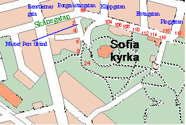
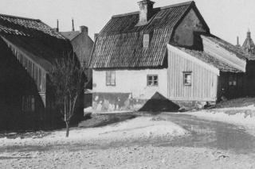
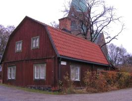
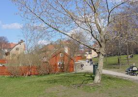
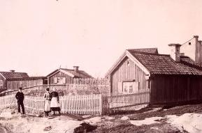
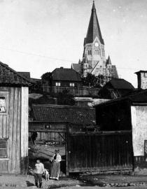

|
Mäster Pers gränd
Ur Kulturhus på Söder och Djurgården, Arne Eriksson, 1999
|
Gränden fick sitt namn 1967. Det var Borgmästargatans fortsättning i Vita Bergen som fick heta Mäster Pers gränd efter
Katarina församlings första kyrkoherde Petrus Diderici Arenbechius(1620-1673), kallad Mäster Peter eller Mäster Per.
De små husen efter Mäster Pers gränd är exempel på den kåkbebyggelse som fyllde skrevor och sänkor utmed Vita Bergens
sluttningar. Husen är, bortsett från det moderniserade huset vid Mäster Pers gränd 2 mot Skånegatan, helt omoderna. De
har elektricitet men saknar vatten och avlopp. Vatten hämtas i en gemensam brunn vid Bergsprängargränd. Avträden finns i
små friliggande hus på tomterna.
Panorama av Heinrich Neuhaus, 1870
|
|

1850 1885
Gatunamnens historia
|
Fastigheterna efter Mäster Pers gränd och Bergsprängargränd förvärvades av staden i slutet av 1800-talet och under de
första årtiondena av 1900-talet. Husen efter Bergsprängargränd byggdes om på 1960-talet.
Flera av husen efter Mäster Pers gränd är hårt slitna och delvis förstörda genom brand. I skrivande stund (våren 1998) pågår
programarbete för upprustningsinsatser.
Mäster Pers gränd 1
Tomten uppläts före 1729 och det nuvarande huset torde ha uppförts på 1720-talet. Till huset hör en väl omskött trädgård
med äldre växtsorter.
|

 Mäster Pers Gränd vid Borgmästargatan. Huset till vänster är Mäster Pers Gränd 1. Bilden är från 1903 från SV. Mäster Pers Gränd vid Borgmästargatan. Huset till vänster är Mäster Pers Gränd 1. Bilden är från 1903 från SV.
|
 Nutid 2002 Nutid 2002
|

Mäster Pers Gränd 1från NV.
|
Mäster Pers gränd 2
Tomten uppläts som ofri den 11 mars 1731 till avskedade dragonen Lars Humla. Den nuvarande bebyggelsen tillkom under
de närmaste åren härefter.
Egendomen uppvisar fram till början av 19oo-talet ett flertal ägare av skilda professioner. Så finns där en skeppstimmerman,
en strumpvävare, en vaktmästare vid Kungl. slottskansliet, en brandvaktsrotmästare, en överauditör, en kofferdiskeppare, en
myntarbetare, en sjömansänka och slutligen en arbetare.
Huset åt Skånegatan byggdes om på 1960-talet. Huset åt Mäster Pers gränd renoverades 1986 med bibehållet utseende (svank).
Mäster Pers gränd 4
Tomten uppläts 1732 och bebyggdes samma år med ett litet hus i norra tomtgränsen. Inom några år tillkom hörnhuset. Den första
ägaren var skeppstimmermannen Thomas Westerberg. Varvstimmermannen Peter Wester innehade egendomen från 1770 till 1801.
Detta år avled både Peter Wester och hans maka Catarina Thomasdotter. De dog barnlösa. Bouppteckningen upptar »en gammal
oförsäkrad gård«, som enligt testamentet till ena hälften tillfaller Peter Westers avlidna bröders änkor, den andra hälften
murardrängen Johan Säf med hustru »för deras oförtrutna omvårdnad om dem (paret Wester) och villiga skötsel under deras
långvariga sjukdom«. Ett exempel på dåtidens sociala omvårdnad.
Ombyggt efter brand 1986.
Mäster Pers gränd 6
Tomten uppläts 1735 till avskedade ryttaren Erich Biörck. Han hade begärt att få intaga och hägna ett litet bergaktigt tomtstycke
längst ut på Södermalm »vid en nyanlagd gränd« (Borgmästargränd, senare Mäster Pers gränd). Årligt tomtöre bestämdes till 16 öre
silvermynt »för dess vida avlägsenhet och oduglighets skull«.
År 1779 sägs att bebyggelsen endast utgjordes av en liten förfallen stuga. De värden som upptas i senare bouppteckningar vid
början av 1800-talet tyder på att förbättringar och eventuell tillbyggnad genomförts så att byggnaden fått sitt nuvarande utseende.
|
Mäster Pers gränd 8
Tomtdelen vid gränden uppläts 1777 till skeppstimmermannen Anders Hultin. Den torde omedelbart ha bebyggts med det
nuvarande timrade huset.
Timmerstugan på den norra tomtdelen, tidigare ingående i tomt nr 13 (jmfr Bergsprängargränd 6) tillkom troligen vid 1700-talets
mitt.
I den lilla timmerstugan låter författaren och estradören Ulf Lundell huvudpersonen i debutromanen Jack (1976) bo en tid när han
blivit utan bostad:
Ringde till Bart och snart kom han med sin lastbil och hämtade mej och prylarna och det bar iväg upp till Sofia kyrka och dom
gamla vinda, röda stugorna och husen där. Och där låg den fina lilla stugan på sin alldeles lilla egna tomt med tovigt ovårdat gräs
och till och med träd, ett mindre och ett större, som just hade börjat spräcka upp knopparna och klä sej i grönt. Tomten var
omgärdad av ett ganska högt plank, falurött även det och i ett hörn stod en typisk torrmugg. Själva stugan var gammal och vind
och faktiskt inte en enda rät vinkel i hela konstruktionen och det gjorde mig varm om hjärtat, för numera håller ju ögonen på att
bli fyrkantiga av allt stål och glas och betong som grinar mot en sådär jävla högfärdigt, hela skiten ritad av några klantskallar till
arkitekter som måste ha fått sina skönhetsideal förvrängda redan i tidiga barndomen. I stugan fanns en hall som inte rymde mer
än ett gammalt kylskåp utan handtag, men som fungerade i alla fall, och några hyllor. När man väl krånglat sig förbi kylmaskinen
kom man in i ett stort rum, ja... så stort var det väl kanske inte, men det räckte till med sin öppna spis och sina fönster och
stockar i taket. Och direkt till vänster när man kommit ut från hallen fanns ett litet mörkt sov
rum med en fast, bred, färdigspikad rekorderlig binge.
Men det här är ju enormt, sa jag till Jonny, och han tyckte att han gott kunde hålla med om det.
Fantastiskt, spädde jag på och jag menade det.
Nutid 2002
|
|

Borgmästargatan (Mäster Pers Gränd) 24 från söder.

Borgmästargatan (Mäster Pers Gränd) 24 från söder. Året är 1892.
Här uppe finns alltså ännu ingen kyrka.

Nytorget 41, Borgmästargatan 15, Renstiernas Gata 37. Alldeles nedanför kyrkan skymtar Borgmästargatan (Mäster Pers Gränd) 15 samt strax till vänster därom Renstiernas Gata 37. Bilden tagen österut från Nytorget år 1905. Sofiakyrkan är nätt och jämt färdig.
|
|
|
{kind=link}
{kind=link}
{kind=link}